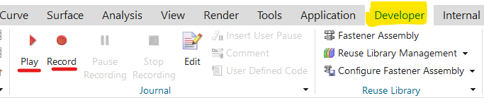

NX Journaling
In Siemens NX, journaling is a method used to record and capture the sequence of actions or commands performed by a user
within the software. Journaling essentially creates a script, or a log of the actions taken in the NX environment, which
can be replayed to reproduce those same steps automatically.
Exploring NX Open through journaling involves using the journaling feature to record specific user interactions with the
NX software. When you activate journaling in NX, it records the user's actions, commands, and interactions with the
software, generating a script file that documents these steps.
This recorded script can serve several purposes:
1. Automation: You can use the generated script to automate repetitive tasks. By replaying the script, the software will
automatically execute the recorded sequence of actions, saving time and effort.
2. Learning and Understanding NX Open: For beginners or those looking to learn NX Open, studying these generated scripts
can provide insights into how commands are structured and executed within NX Open. It can be a helpful educational
resource to understand the syntax and sequence of commands used in the NX Open API.
3. Troubleshooting and Documentation: Journaling can also be beneficial in documenting specific workflows or
troubleshooting issues. The recorded script can be shared with others for review, collaboration, or for resolving
problems within the software.
It's important to note that while journaling records the user interactions and commands, it may not directly translate
to code in NX Open. The recorded script will be in a specific scripting language that NX uses to replicate the steps
taken, and it may need modification or adaptation to become part of an NX Open program.
However, by examining these journal files, users can gain a better understanding of the sequence of commands, functions,
and methods used in NX Open, which can be informative for developing scripts or programs using the NX Open API.
The NX Open API is very rich and deep — it has thousands of available functions. This richness sometimes makes it
difficult to find the functions you need. Fortunately, if you know how to use the corresponding interactive function in
NX, the journaling facility will tell you which NX Open functions to use and will even write some sample code for you.
You choose Developer tab Journal Record to start recording, run through the desired series of steps, and then choose
Developer tab Journal Stop Recording. The code generated by journaling is verbose and is often difficult to read. But
it’s worth persevering, because hidden within that code is an example call showing you exactly the function you need.
You can indicate which language should be used in the recorded code by choosing File tab Preferences User Interface
Tools Journal. The available choices are C#, C++, Java, Python, and Visual Basic.
